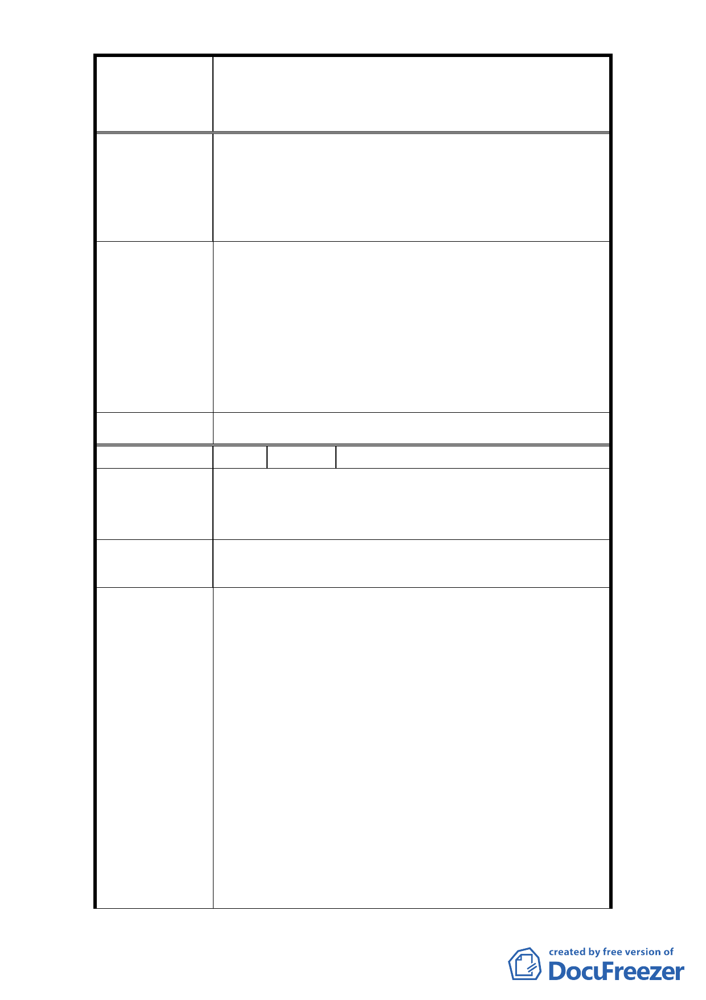

修訂臺北市大安區青田街保存區聚落風貌保存專用區細部計
案
名
畫、變更部分第三種住宅區、第三種商業區(特)為第三種住宅區
(特)(日式宿舍)及第三種商業區(特)(日式宿舍)暨劃定週邊地
區都市設計管制細部計畫案
4. (1)當 267/269/270 地號進行都更時，毗鄰的公有
地日式及歷史建築(地號 262-266 及 268 號)的建築
容積應可一併列入計算。(2)當 267/269/270 地號
進行都更時，應不受日式及歷史建築的諸多條件限
制而影響本區塊的發展。
1. 計畫區內第三種住宅區建蔽率 45%、容積率 225%係
依「臺北市土地使用分區管制自治條例」全市性規
定管制。
2. 該教會係於本府 96 年公告計畫案前申請建築，故
市 府 回 覆 意 見 無開挖率 60%上限規範。
3. 本次修訂計畫針對本地區之都市設計、容積管控、
開挖率等進行檢討，期能兼顧文化資產保存與居民
之土地開發利益。
委 員 會 決 議 依市府回覆意見辦理。
編 號 27 陳情人 周瑜家
為了保持青田街保存區的安寧和深厚的文化氣息，請
陳 情 理 由 繼續保留所有的日式宿舍，其中不少是省政府單位建
築的仿日式宿舍。
請繼續保護所有的老樹，不被摩天大廈拆除，以維護青
建 議 辦 法 田街綠意盈然的風貌。
1. 本次修訂計畫原則上仍維持 96 年計畫之原意及計
畫區內所有之文化資產，惟針對本地區之都市設計
以及容積管控進行修改，期能兼顧文化資產保存與
居民之土地開發利益。
2. 另為保存區內眾多老樹，故本次修訂計畫內增加有
關樹木保護之規定。
(1) 本計畫區範圍內建築基地內達受保護樹木標準之
市府回覆意見
樹木，應依「臺北市樹木保護自治條例」及「臺北
市土地使用分區管制自治條例」規定辦理，其未達
受保護樹木標準之植栽基於維繫街區整體風貌，經
本府文化局指定者，應比照樹木保護自治條例規定
辦理。
(2) 本計畫區內未指定或登錄為文化資產之日式宿舍
進行開發時，應調查並提送基地內之喬木樹籍資料
，提送相關保護計畫經本府文化局審查同意後始得
- 33 -